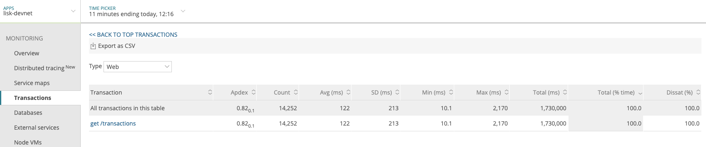

Performance Monitoring
We use New Relic to monitor the activities inside of the application. It enables detailed insight into the system and keeps track of the performance of any activity, e.g. an HTTP API call or a background process from Lisk Core jobs queue.
Following steps should provide you with the insights of why and how to monitor your Lisk Core node using New Relic instrumentation:
Enable New Relic
Get New Relic license key
The first thing you need to do is register an account at https://rpm.newrelic.com if you have not already done that. After successful login, select ``Account settings'' in the account dropdown in the New Relic UI. From the Account information section on the right side of the Summary page, copy your license key.
Add the license key
Option 1: As environment variable
To enable the performance monitoring on your node, make sure you have an
environment variable NEW_RELIC_LICENSE_KEY set:
Binary & Source
The following command works for Lisk Core Binary and from Source distributions:
export NEW_RELIC_LICENSE_KEY=XXXXXXXXXDocker
For Docker distributions of Lisk Core navigate into the docker
folder inside your Lisk Core installation:
cd lisk_repo/docker # navigate into docker directoryInside, edit docker-compose.override.yml and add your license key
like so:
version: "3"
services:
lisk:
environment:
- NEW_RELIC_LICENSE_KEY=XXXXXXXXX
Then, save your changes to the file and reinitialize Docker, so it can use the new environment variable.
docker-compose up -d # (re)start docker containersOption 2: In newrelic.js
The second way of adding the license key is to edit newrelic.js file
which can be found in the root directory of the Lisk Core installation.
cd lisk_repo # navigate inside the root folder of lisk coreInside, open the file newrelic.js and search for the option
license_key and add your license key as a string value.
/** * Your New Relic license key. * * MUST set the license key using `NEW_RELIC_LICENSE_KEY` env variable * if you want to enable the monitoring of the lisk node */ license_key: 'XXXXXXXXX',
After adding the license key, save your changes and reload your node.
(Re)start Lisk Core node
Then start the node normally.
bash lisk.sh start # start lisk core binary
npx pm2 start lisk # start lisk core source
docker start container_id # start lisk core docker… or restart if it is already running.
bash lisk.sh reload # restart lisk core binary
npx pm2 restart lisk # restart lisk core source
docker restart container_id # restart lisk core dockerKeep your node busy
To monitor activities in the system, you need to perform some. So keep your node busy by performing actions like taking a snapshot, syncing your node, or running various API request against it. Even if you don’t perform them, New Relic can monitor internal activities of the system e.g. different queue jobs.
There are several ways to create workload on your node:
Option 1: Lisk Core Test Suite
The Lisk Core Test Suite is only available for Lisk Core from Source.
The
unitTestsuite is not suited for this purpose, as unit tests are not executed in the context of the running application.
The README of the Lisk Core repository in Github describes how to run the Testsuite.
Option 2: Apache Bench
Apache Bench is a generic benchmarking tool to measure the performance of HTTP servers.
Do e.g. the following request:
now && ab -n 200000 -c 1 -k "http://127.0.0.1:7000/api/accounts?publicKey=4e8896e20375b16e5f1a6e980a4ed0cdcb3356e99e965e923804593669c87ad2"now: Appends the current system time on top of the Apache Bench
output. In case you want to compare New Relic benchmark results with
Apache Bench output, it is convenient to add it for knowing when the
benchmark started exactly, as Apache Bench is not logging that itself.
-n: The number of requests that are executed
-c: The number of requests to perform in parallel.
-k: Enable the HTTP KeepAlive feature, i.e., perform multiple
requests within one HTTP session.
Option 3: Siege
Siege is another tool for benchmarking the performance of HTTP servers.
Do e.g. the following request:
siege -c 10 -t 30m http://127.0.0.1:7000/api/blocks-c: Number of requests to perform in parallel.
-t: Allows you to run the test for a selected period.
Analysis with New Relic
Let’s take a case study, we want to analyze the performance of API
GET /api/transactions endpoint, to figure out:
-
If there is any bottleneck in the database level
-
Which of the database query is taking most of the time
Here are the steps we follow:
$ cd ~/lisk_repo
~/lisk_repo $ export NEW_RELIC_LICENSE_KEY=xxxxxxxxxxx
~/lisk_repo $ npx pm2 start liskNow start making some requests using Siege:
siege -c 10 -t 5m http://127.0.0.1:4000/api/transactionsThe script will automatically keep on sending the HTTP requests against
your node for 5 minutes (-t 5m). During that time please keep in
mind:
-
You may want to disable the cache on the node to get real performance analysis. To do this, set
cacheEnabledin configuration tofalse. -
You might not see the viable results if your development blockchain dataset is empty. This could be changed by running your tests against the Testnet data.
-
It may take a couple of minutes to show the analyzed results in the New Relic interface so be patient.
To see the New Relic instrumentation results, please log in to
https://rpm.newrelic.com, and select APM from the top menu.
The first screen is the list of applications. Depending on which network you run your node in, you will see the application title as shown in the image below.

Please select the specific application by clicking its name. You will see the following dashboard:

To know fine-grained details of this dashboard, please read
https://learn.newrelic.com/courses/intro_apm. For now, since during the
experiment we only executed the HTTP requests against our node
(GET /api/transactions), there is only one section having
interesting results. Please select ``Transactions'' from the left menu
in the above screen. See detailed instructions in the below image.
To clarify, New Relic transactions have no relation with Lisk transactions. It’s just the grouping term New Relic use to show analytics.

In the above image the most valuable information for us is highlighted in the rectangle, which provides us with the following information:
-
Most of the time (56%) was spent in ExpressJS which is a Node.js module.
-
During the experiment, one database view (
trs_list) and one database table (delegates) were involved in the persistence layer. -
Querying to database table
delegateswas quick. -
While query to database view
trs_listwas a bit expensive. -
On average API calls for
GET /api/transactionstook 122ms.
If you want this information in a tabular form to present somewhere, please click on the ``Show all transactions table'' link. Then you will see a view like this.

From this screen you can see:
-
In selected time range we made 14252 total requests to
GET /api/transactions. -
The slowest request took 2.17 seconds.
-
The fastest request took 10ms.
-
The average time for requests is 122ms while the standard deviation is 213ms.
-
Difference between average and standard deviation shows there were small spikes between requests.
-
You can export data to CSV format from this screen to keep a record or share with others.
Now if we want to debug deeper which transactions actually took 2.17 seconds, please go back to the previous screen, scroll down a bit and you will see transaction traces.

Here you can see an overview of an individual transaction which took
longer time and is considered as slow''. The threshold which defines
the slow'' transactions is configured in file +newrelic.js+ under
transaction_tracer.explain_threshold, which is currently 100ms-
every request which took more than 100ms will be considered as slow''
and logged as the trace by New Relic. Let’s debug further and verify
what made this request slow'', by clicking on any of the trace links
in the list.

As shown on the above trace summary, most of the transaction’s time was
spent in two functions modules.transactions.shared.getTransactions
and Middleware: bound logClientConnections. You can go to trace
detail to see more information and call stack. You can also click on
``Database queries'' to see which queries were executed during this
request.
It’s also possible to find the database query which is taking most of
the time. To do this, please click on the left side menu for
Database'' and then sort by Most time consuming'' and then select
the top of the list.

Scroll down on the page shown above, you will see the slow queries shown below:

By analyzing the above diagrams, we can conclude the following assuming that all stats are strictly within experiment time range:
-
The slowest queries in the system are queries for
trs_listview. -
For that database view
trs_listthe slowest query is theSELECT count(*) FROM trs_listwhich took 2.13 seconds. -
There are few other queries in the on
trs_listview which took more than 1 second time. -
If you click on the top slow query, you will notice the query was executed during
GET /api/transactions.

We hope the above use case helps you to understand the usage and benefits of New Relic. Please let us know if you want to know more.
FAQ
I am not seeing Lisk Data in the New Relic APM dashboard?
Please make sure to check following.
-
Are you using a valid license key to your account?
-
Have you exported the license key on the node where you are running Lisk?
-
Have you selected the proper time range in New Relic APM?
-
Are you looking on the right page? E.g. you may be searching web transactions but you had selected Non-Web transactions in UI.
-
If you just run the node, give it a few minutes let New Relic crunch the data and show in UI.
Are the performance measures consistent?
-
As far as you are using the same machine specification to run different scenarios, the stats will be consistent.
-
We recommend to not benchmark on your development machine, as it can have another workload during different test runs.
-
If you are using AB or Siege, always use the same number of connections to simulate the same request load on a node.
How is it useful for me as a Delegate or Exchange?
-
Performance of the machine may affect the behavior of interacting with the node.
-
You can create alert policies on New Relic to inform you when your app taking more memory.
-
You can set alerts to see if the database is getting slow.
-
You can track if some errors occurred in the system, which were not handled properly.